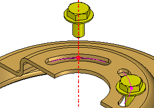

Assembly layouts
As you develop the design concepts for a new assembly, it is useful to create a layout of the preliminary design. The Sketch command in the Assembly environment allows you to draw 2D sketch geometry on part or assembly reference planes.
You can draw assembly sketches on the three default assembly reference planes or you can create new assembly reference planes to draw sketches on.

You can use assembly sketches to do the following:
-
Create 3D ordered geometry within parts.
-
Create assembly features.
-
Position 3D parts relative to the sketch geometry.
-
Position an assembly sketch relative to a 3D part.
For information about how you can use sketches in your assemblies, see Using sketches in assemblies.
Positioning 3D components using assembly sketches
You can position parts and subassemblies with respect to a part or assembly sketch. You can position 3D components using assembly relationships, such as mate and planar align; or using 2D dimensions and relationships, such as distance between and connect, or using the Select command.
While editing an assembly sketch, you can use the Parts Library tab to add new components to the assembly.
- Positioning 3D components using assembly relationships
-
You can use assembly relationships, such as Mate, Planar Align, Connect and Axial Align, to position a part to a keypoint or a line on a part, subassembly, or top-level assembly sketch.
Example:It can be difficult to position a bolt in a slot using faces. In this example, a bolt part is positioned to a point element on a part sketch. An inferred axis that is perpendicular to the reference plane of the sketch on which the point lies defines the axis for the Axial Align relationship. The arc and point were drawn such that if the size or position of the slot changes, the arc and point will also update properly.

- Positioning 3D components using 2D dimensions and relationships
-
While you are editing an assembly sketch, you can use 2D dimensions and relationships to position a 3D component relative to elements in the sketch. When you edit the assembly sketch, the position of the roller parts update. This can be useful when creating a new assembly that uses existing components.
Example:You can use connect relationships (A) to position roller parts (B) relative to an assembly sketch.
In this example the value of the 60 millimeter dimension was edited in the assembly sketch to 75 millimeters. Because the roller part was constrained to the assembly sketch using a 2D connect relationship, the position of the roller updated when the sketch dimension was edited.

- Positioning 3D components using the Duplicate Component command
-
In an assembly layout sketch, you can reference and position components defined as blocks using the Duplicate Component command
 . Using the Select From and Select To steps in the command, you can select a block in an assembly or subassembly sketch,
which is then matched to the orientation of the components.
. Using the Select From and Select To steps in the command, you can select a block in an assembly or subassembly sketch,
which is then matched to the orientation of the components.
- Positioning 3D components using Select
-
When a sketch window is active, you can use the Select command and options on the Position 3D Component command bar to specify whether the sketch drives the position of the 3D component or the 3D component drives the position of the sketch. In the previous example, the Sketch Driving option was set for the roller parts to specify that the sketch drives the position of the 3D components.
Note:When you set the Sketch Driving option, the component symbol in PathFinder indicates that the component is driven by the assembly sketch.
You can use the Select command to select the 3D component in PathFinder or you can use the Component Select Tool command to select the 3D component in the graphics window.
As you choose which relationships and techniques to use when you position components in assemblies, keep in mind the following:
-
That you cannot use 2D dimensions and relationships to position 3D components that conflict with existing 3D relationships.
-
When you set the Sketch Driving option for a part, it is with respect to the current sketch. If relationships are available, the part can be driven by or drive another sketch.
-
You can set the Sketch Driving option for a part in more than one sketch and apply 2D relationships in each sketch until the part is fully positioned. This can make it easy to fully position a part using two or more sketches.
-
When you set the Lock Alignment option on the Position 3D Component command bar, the part is locked parallel with respect to the sketch plane and the part face you selected. The part can still move and rotate. This can make it easy to fully position a part using one sketch.
Positioning assembly sketches using 3D components
You can also constrain elements on an assembly sketch to a 3D assembly component such that if the size, shape or position of the 3D component changes, the assembly sketch updates. When you are editing an assembly sketch, you can select a 3D component and set the Component Driving option on the Position 3D Component command bar to specify that the 3D component drives the size, shape, and position of the assembly sketch.
Assembly sketches and alternate assemblies
The Sketch and Copy Sketch commands are available only when the Apply Edits to All Members option on the Family of Assemblies tab is set (you are working globally).
For more information, see the Alternate Assemblies Impact on Solid Edge Functionality Help topic.